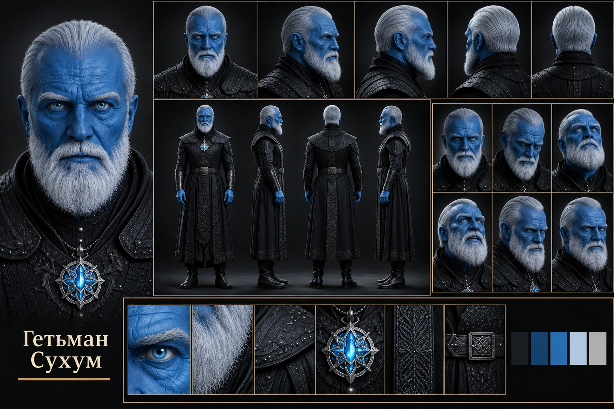

ОСНОВНА ІНФОРМАЦІЯ
Керівник Нульового плану
Сухум — гетьман цивілізації Нульового плану. Він керує спільнотою характерників і бере участь у визначенні стратегічного напряму її розвитку. Його робота охоплює міжпланові зв’язки, розвідку, оборону, виробництво та організацію допомоги іншим світам.
Ім’я: Сухум
Титул: гетьман
Світ: Нульовий план
Статус: характерник найвищого рангу
Вік: у рукописах не зазначений
Зовнішність: синя шкіра, довге сиве волосся, густа біла борода, світлі очі
Голос: низький, трохи хриплуватий
ХАРАКТЕР І КЕРІВНИЦТВО
Спокій, досвід і відповідальність
Сухум говорить повільно й упевнено, не намагаючись справити враження демонстрацією влади. Він уважно оцінює співрозмовників і ситуацію, зосереджується на суті проблеми та швидко переходить від домовленостей до організації конкретної роботи.
У стратегічних питаннях він мислить масштабами цілих цивілізацій. Водночас не втручається в рішення підлеглих без потреби: оцінює загальну картину, стежить за перебігом операцій і залишає відповідальність тим, хто безпосередньо ними керує.
МОЖЛИВОСТІ ТА РОБОТА
Міжпланова координація
Сухум користується порталами та мислезв’язком. Він працює з голографічними проєкціями, картами світів і розвідувальними даними. Під час зустрічі з гетьманом Миколаєм він доповнює карту новими областями, спираючись на дослідження розвідників Нульового плану.
Як керівник, Сухум координує хорунжих і відповідальних за окремі напрямки. Після домовленостей із Другим планом він запускає підготовку спільних операцій, залучення виробничих потужностей і програм евакуації цивільного населення на рекреаційну планету.
РОЛЬ У СЮЖЕТІ
Союз трьох світів
Сухум підтверджує, що зв’язок між його світом і світом гетьмана Миколая виник нещодавно. Він також розповідає про третю цивілізацію, яка опинилася під атакою рогатих воїнів. Усвідомлення спільної загрози стає основою для союзу трьох світів.
Під час подальших подій Сухум бере участь у переговорах із Раулем, представляє інтереси Нульового плану та підтримує створення спільного механізму координації. Він наголошує, що внутрішнє управління кожного світу має залишатися його власною справою, тоді як спільні військові, ресурсні та міжпланові питання потребують узгоджених рішень.
Важливі події
- Під час першої зустрічі з гетьманом Миколаєм демонструє карту дослідженої сфери світів Нульового плану та пояснює появу нового зв’язку між цивілізаціями.
- Разом із Миколаєм визнає спільну загрозу для трьох центральних світів і формує основу союзу.
- Після переговорів із Раулем організовує залучення ресурсів Нульового плану до спільної оборони.
- Доручає Найріну, Іману та іншим керівникам напрямків підготувати роботу відповідно до досягнутих домовленостей.
- Бере участь у визначенні спільної системи управління міжплановими операціями, не пропонуючи скасовувати самостійність урядів.
- Під час бойових подій аналізує обстановку, отримує доповіді та координує подальші дії й підготовку оборони.
Взаємини
- Гетьман Миколай: між ними швидко виникає взаємна повага; вони стають союзниками й разом координують дії трьох світів.
- Найрін, Іман і Будулай: хорунжі отамани, з якими Сухум узгоджує виконання стратегічних завдань.
- Рауль: керівник Другого плану та партнер у переговорах щодо спільної оборони й координації.
- Дмитро: Сухум отримує від нього доповіді про бойові дії та оцінює його рішення як керівника операцій.
Візуальний канон
Синя шкіра, довге сиве волосся, зачесане назад, густа біла борода та світлі, майже крижані очі. На затвердженому автором візуальному аркуші Сухум зображений у темному оздобленому обладунку з синім нагрудним знаком.